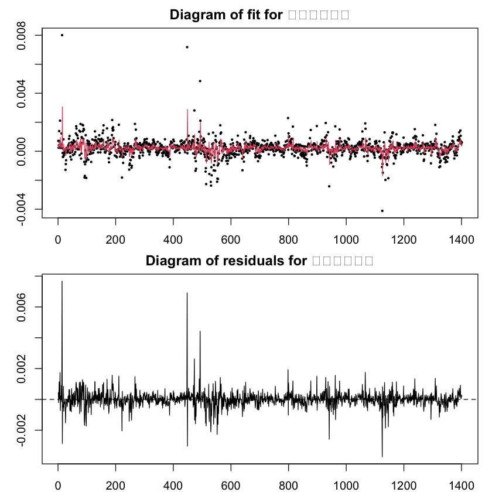
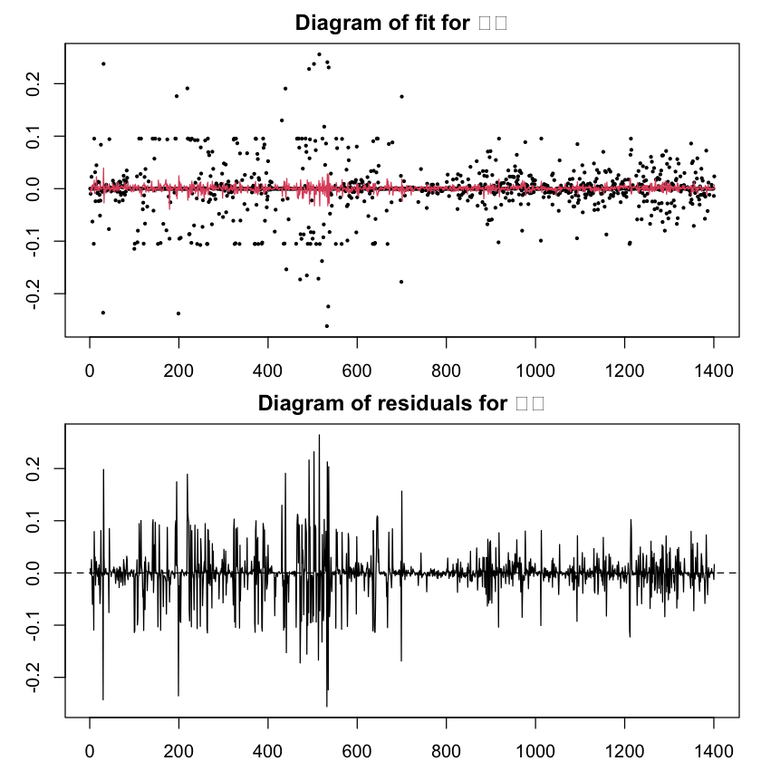
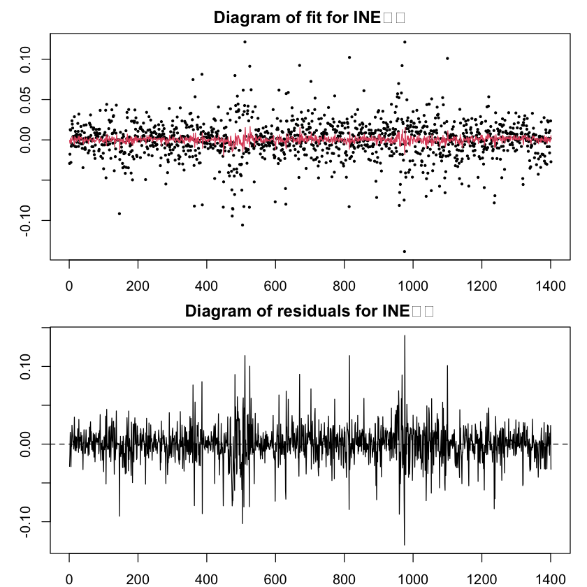
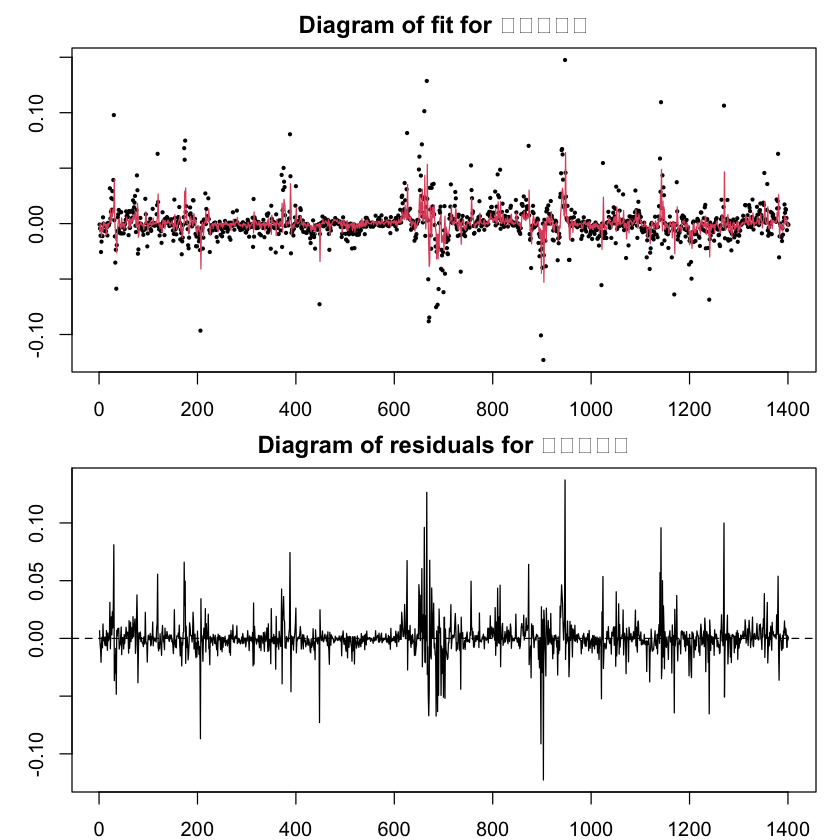
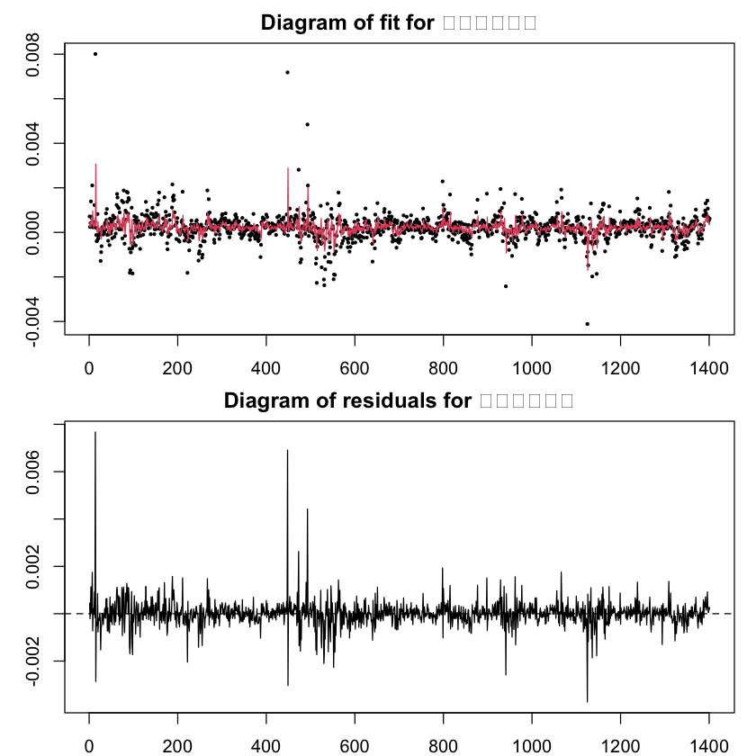
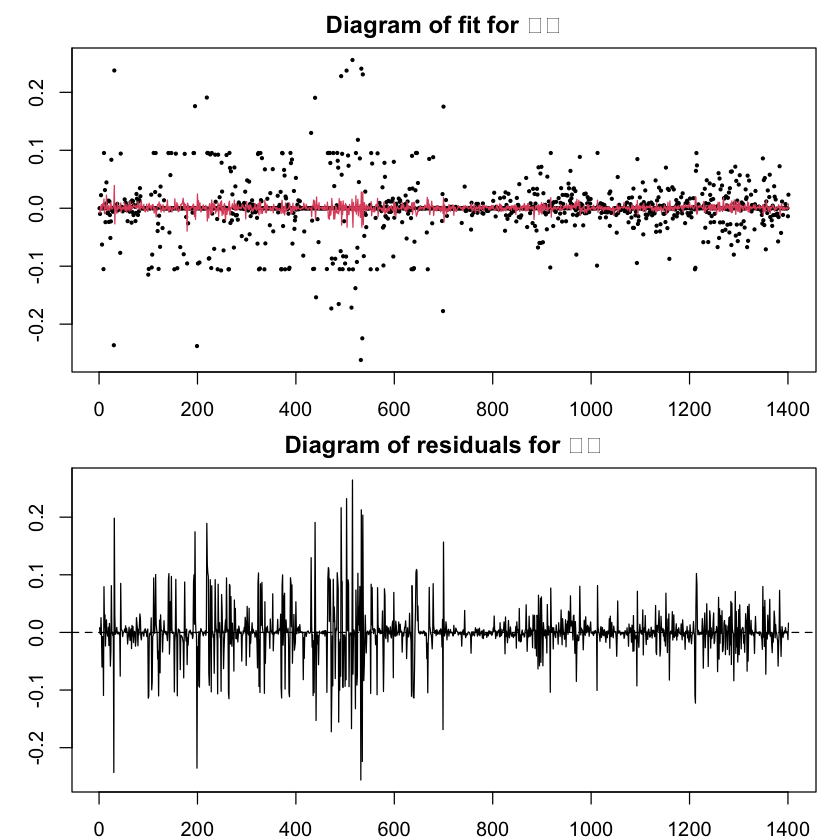
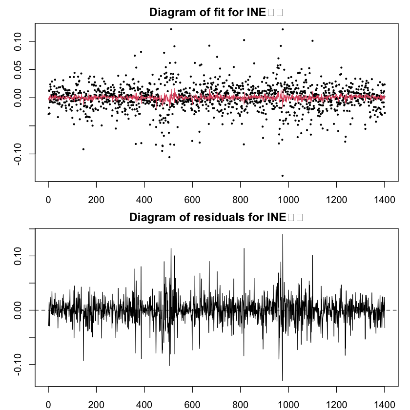
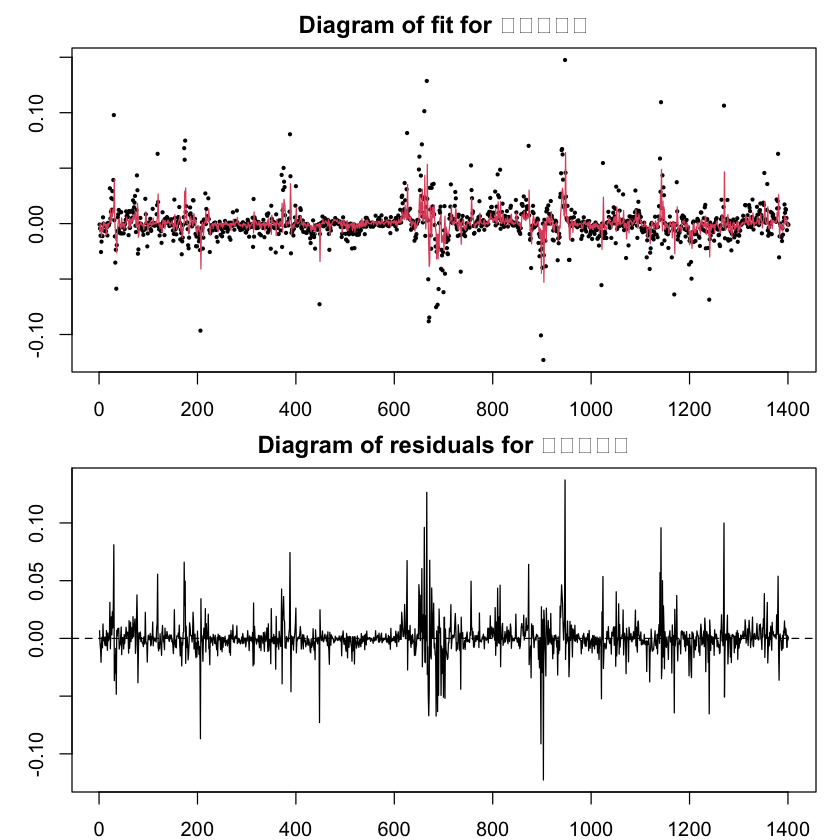

https://gabauerdavid.github.io/ConnectednessApproach/#Dynamic_Connectedness_Measures https://icasas.github.io/tvReg/reference/tvVAR.html#examples
使用 TVP-VAR（时变参数向量自回归）模型进行分析时，可以利用一些专门的软件和工具包。这些工具提供了模型估计、参数调优、结果可视化等多种功能，通常具有方便的接口和较为成熟的实现。以下是几个常用的工具和软件包：
1. R 语言#
R 是时间序列分析和经济学研究中非常常用的工具，支持多种 TVP-VAR 实现。
bvarsv: 这是一个专门用于贝叶斯向量自回归（VAR）和随机波动率（Stochastic Volatility）模型的 R 包，支持 TVP-VAR 的模型估计。该包可以实现 TVP-VAR 模型中常用的马尔可夫链蒙特卡罗（MCMC）方法和粒子滤波算法。安装与使用：
install.packages("bvarsv") library(bvarsv)
示例：
# 假设我们有一个多变量时间序列数据 y result <- bvar.sv.tvp(y, p = 2, nrep = 10000) summary(result)
vars: R 中用于向量自回归（VAR）模型的包，虽然它不直接实现 TVP-VAR，但可以与其他自定义函数或算法相结合进行 TVP-VAR 的估计。MSBVAR: 专门用于马尔可夫切换和贝叶斯向量自回归分析的包，包含了 TVP-VAR 的基础实现，适合研究多状态模型中的参数变动。
# 读取 CSV 文件，假设文件名为 "index_data.csv"
data <- read.csv("datasets/log_final_df.csv", header = TRUE)
# 假设第一列为日期列，将其转换为日期格式
data[, 1] <- as.Date(data[, 1], format = "%Y-%m-%d") # 根据文件中的日期格式修改格式字符串
# 查看数据的前几行
head(data)
| DateTime | 地缘政治 | 气候政策 | 新能源指数 | 绿色债券指数 | 碳价 | INE原油 | 天然气价格 | 焦炭价格 | |
|---|---|---|---|---|---|---|---|---|---|
| <date> | <dbl> | <dbl> | <dbl> | <dbl> | <dbl> | <dbl> | <dbl> | <dbl> | |
| 1 | 2018-03-27 | 0.9457402 | 1.231805 | 0.024406049 | 0.0003106823 | 0.087011377 | -0.01720573 | -0.0183642272 | 0.00000000 |
| 2 | 2018-03-28 | 0.9457402 | 1.432220 | -0.017753819 | 0.0007159088 | 0.000000000 | -0.02927038 | -0.0008302201 | -0.05405253 |
| 3 | 2018-03-29 | 0.9457402 | 1.440635 | -0.002632740 | 0.0002407960 | -0.009791369 | -0.01778583 | -0.0044395189 | 0.02426367 |
| 4 | 2018-03-30 | 0.9457402 | 1.227887 | 0.011667491 | 0.0004166515 | 0.000000000 | 0.01270169 | -0.0109046236 | -0.03070356 |
| 5 | 2018-04-02 | 1.1056882 | 1.621996 | -0.004405471 | 0.0013884936 | 0.022530395 | 0.01206287 | -0.0256278263 | 0.04423190 |
| 6 | 2018-04-03 | 1.1056882 | 1.080812 | -0.015901298 | 0.0007016887 | 0.000000000 | -0.02796535 | -0.0162841633 | 0.00000000 |
library(tvReg)
VAR.fit <- vars::VAR(usmacro, p = 1, type = "const")
coefficients(VAR.fit)
- $inf
A matrix: 4 × 4 of type dbl Estimate Std. Error t value Pr(>|t|) inf.l1 1.00372905 0.01590280 63.1164947 2.014451e-129 une.l1 -0.11736627 0.01821168 -6.4445591 9.306553e-10 tbi.l1 0.01235355 0.01337224 0.9238204 3.567515e-01 const 0.59989809 0.10047121 5.9708458 1.138688e-08 - $une
A matrix: 4 × 4 of type dbl Estimate Std. Error t value Pr(>|t|) inf.l1 0.055799528 0.01608843 3.4683009 6.478598e-04 une.l1 0.922755951 0.01842427 50.0837246 2.015953e-111 tbi.l1 0.006934505 0.01352833 0.5125912 6.088327e-01 const 0.219119597 0.10164400 2.1557553 3.236017e-02 - $tbi
A matrix: 4 × 4 of type dbl Estimate Std. Error t value Pr(>|t|) inf.l1 0.06928427 0.03464401 1.9998917 4.693636e-02 une.l1 -0.02370559 0.03967388 -0.5975112 5.508776e-01 tbi.l1 0.92133152 0.02913122 31.6269436 1.244003e-77 const 0.32093250 0.21887500 1.4662821 1.442245e-01
tvVAR.fit <- tvVAR(data[,2:9], p = 1, type = "const")
plot(tvVAR.fit)
Calculating regression bandwidths... bandwidth(s) 20 0.07374044 20 1.180732 1.318377 20 20 4.021425
 







coefficients(tvVAR.fit)